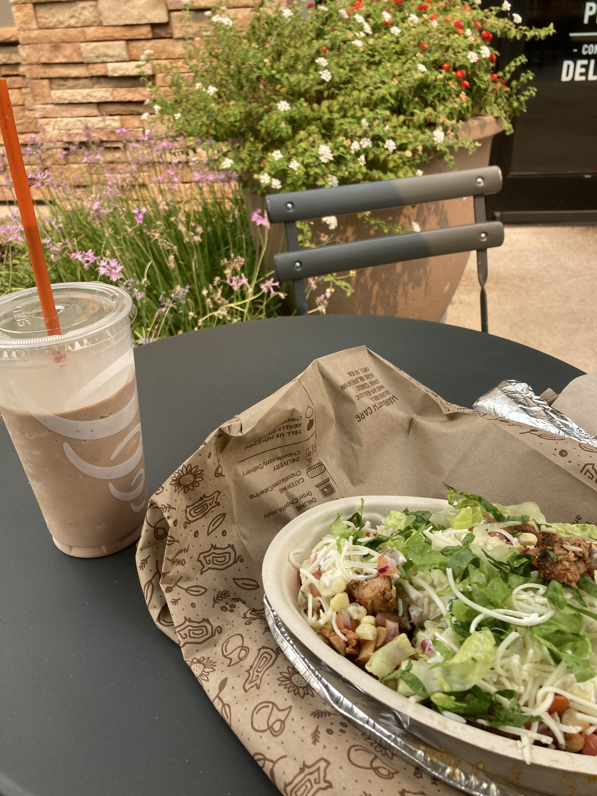

Woke up this morning to some terrible air quality. A series of lightning strikes across California the past three days lit a bunch of fires causing an AQI of around 160 all across the bay area and in the valley. Fortunately my lungs felt fine the whole time, though my eyes became really dry and itchy around 60 miles in. Had a NUTTY tail wind from mile 20 - 50 where I was going ~20mph with little effort.

Had a bumblebee tag along for about an hour. Was too afraid to brush it off because my clothing was really thin and a bee string to my thigh would've been terrbible for biking, but the little guy turned out to be friendly enough.

One of my biggest fears with this trip is how much muscle I end up losing. Started the trip at ~178 pounds and joked with my family that I wouldn't be coming back unless I was atleast 180 pounds. One of my friends made a bet that he would be heavier than me by the end of the trip (he's 125 pounds as of yesterday) I arrived into elk grove about 6 miles from my motel at around 2 and since the checkin was at 3 I decided to try to eat a big lunch to recooperate some of the 5000?? calories strava said I burned. Got a large peanut butter mood from jamba juice and my classic chipotle chicken bowl order, totalling ~2000 calories but it turned out to be a huge waste. I think I was really dehydrated because all of it ended up in the bushes right outside of chipotle :( Definitely going to be more careful on the hot days coming up!